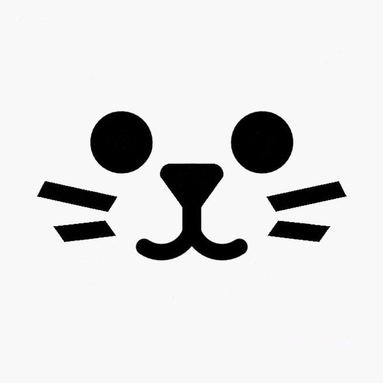

Hi! I'm NeX(Havoc NeX Lauri). I'm 15 years old, from Ukraine, and since childhood, I've dreamed of creating something of my own. I've always been passionate about programming, 3D design, and game development, spending countless hours learning new tools and technologies. Right now, I'm working on my biggest and most ambitious project — the boomer shooter Ragecore.
Ragecore is a game inspired by the atmosphere of hell and Christian biblical themes. Its protagonist is a cowboy-alcoholic who, despite his questionable past, embarks on a path of war against demons. I'm drawing inspiration from iconic games like DOOM(2016), Quake, and Ultrakill to create a project filled with adrenaline, bloody action, and hardcore battles.
I've been developing the game entirely on my own since November 2024: writing code, creating 3D models, textures, animations, and even voice acting. I love working on every detail to create a unique atmosphere and make the game unforgettable. For me, development is more than just work—it's a way to express myself, to pour my soul into every frame and every mechanic.
Beyond game development, I’m passionate about digital art. I draw concepts, design characters, build worlds, and stream my creative process. I love sharing my ideas and proving that even as a solo developer, you can create something amazing with enough passion and perseverance.
My dream is to make Ragecore a truly iconic game that finds its audience among fans of hardcore action. I want to inspire other developers, especially beginners, and show that game development is an exciting adventure open to anyone.
If you're interested in what I do or want to support me, feel free to reach out or follow me on my social media! I’m always happy to meet new people, have interesting conversations, and hear your feedback.